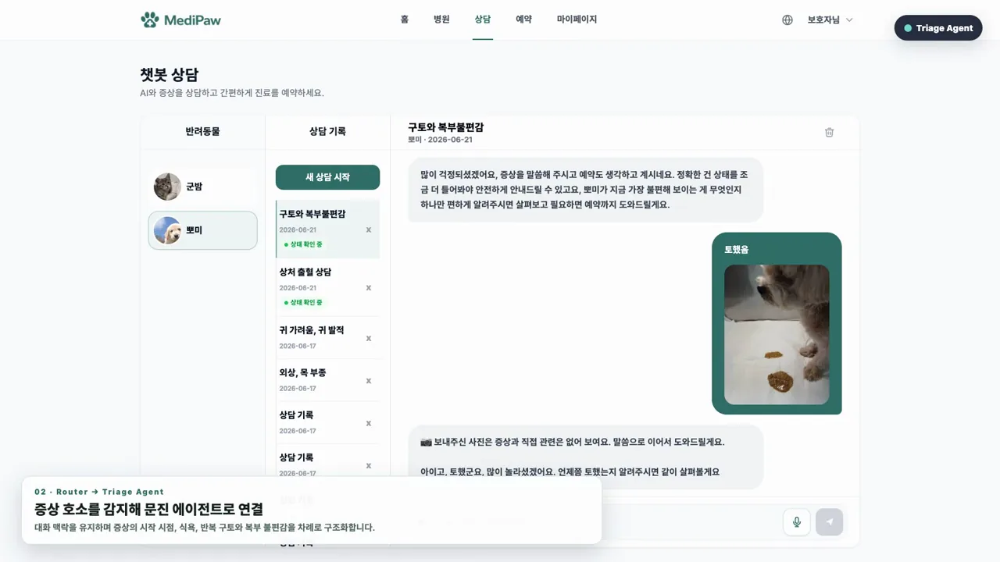
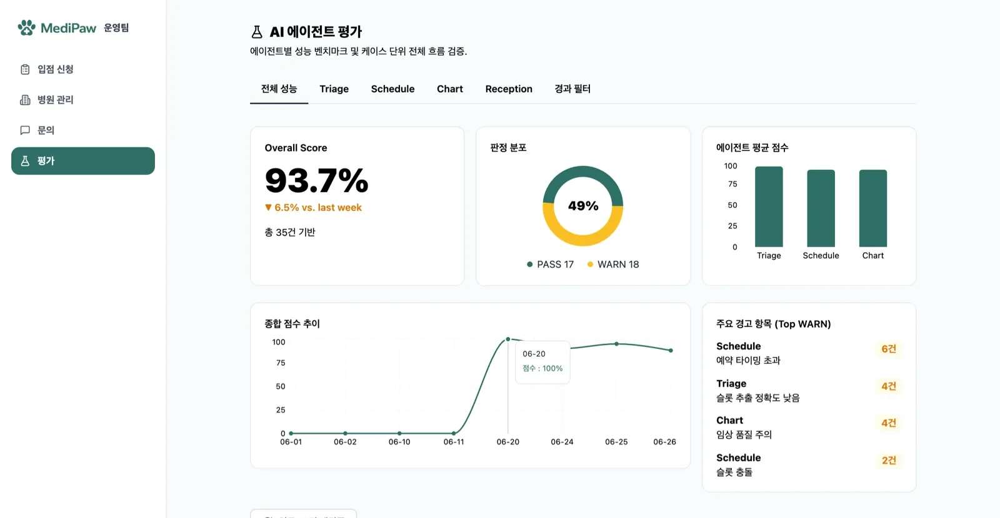

Bio × AI Engineer
생화학 석사와 CAR-T 세포치료제 연구를 거쳐, 바이오 연구와 헬스케어 실무 경험을 바탕으로 AI 서비스를 구현하는 엔지니어입니다. 논문·질병·약물처럼 근거가 중요한 데이터를 다루며, 근거를 함께 제시하고 검증하는 RAG·멀티에이전트 기반 AI 서비스를 구현해왔습니다. 동물병원 상담–문진–예약 흐름에서 RAG 문진, 멀티에이전트 라우팅, LLMOps 평가 대시보드까지 구현했습니다.

Experience
생화학 연구에서 시작해 바이오 실무를 거쳐 AI 서비스 개발로 이어진 경력입니다.
SK네트웍스 패밀리 AI 캠프 · AI 엔지니어
PyTorch·LLM 기반 실무 프로젝트에서 RAG, 멀티에이전트, LLM 평가 흐름을 end-to-end로 구현했습니다. 바이오 텍스트를 근거 기반 AI 서비스로 연결하는 API/DB/배포 파이프라인 설계에도 참여했습니다.
다인바이오 · 전략기획팀 학술 지원 및 마케팅
Roche사 qPCR 장비 고객의 실험 문제(Ct 이상, 비특이 증폭 등)를 원인별로 분석하고 프로토콜 최적화 가이드를 제공했습니다. 제품별 판매 실적(YoY)을 분석해 고객 수요 변화와 부진 원인을 도출했습니다.
티카로스 (Ticaros) · POC팀 연구원
CAR-T 세포치료제 전주기 파이프라인 수행 (Cloning, Viral vector 생산, T-cell Transduction), FACS 기반 세포 품질 분석 및 동물 모델 효능 검증
경북대학교 대학원 · 생화학 석사 (후생유전학 전공)
비주류 모델(Xenopus laevis)의 실험 프로토콜을 구축하고 섬모 운동성을 정량 분석했습니다 (GPA 4.2 / 4.3). 실험 조건과 결과를 구분해 검증하는 경험이 이후 AI 응답 평가와 실패 케이스 분석으로 이어졌습니다.
Research
SCI(E) 국제 학술지에 게재된 대표 연구 성과입니다.
Ruvbl1 is Essential for Ciliary Beating during Xenopus laevis Embryogenesis
Xenopus laevis 배아 모델을 활용하여 다섬모세포에서 Ruvbl1 단백질의 기능을 분석한 연구입니다. Ruvbl1 유전자 결손 시 섬모의 형태는 유지되지만 기저소체 극성(basal body polarity)이 선택적으로 교란되어 유체 흐름이 현저히 감소함을 확인했습니다. 공동 1저자로 실험 프로토콜 구축과 섬모 운동성 정량 분석에 참여했습니다.
Featured Project
MediPaw 🐾 — LLM 멀티에이전트 동물병원 워크플로우 자동화
전화 예약과 종이 문진에 머물던 동물병원을, 보호자의 말 한마디로 상담부터 진료 기록까지 이어지는 하나의 AI 워크플로우로 만들었습니다.
직접 구현 ① 워크플로우·웹앱 — 보호자·수의사·운영자 3개 웹앱과 진료 여정 전체 흐름
② RAG·멀티에이전트 — LangGraph 하이브리드 라우팅 · pgvector 기반 RAG 문진
③ 평가·배포 — LLMOps 평가 대시보드 · pytest/GitHub Actions 회귀 게이트 · AWS 배포

사용자의 요청을 처음에 잘못 분류하면, 이후 문진·예약·진료 기록 흐름까지 전부 잘못 이어집니다.
모든 발화를 LLM이 분류하니, 비슷한 요청(“예약 바꿀래요” vs “예약 전에 뭐 좀 물어볼게요”)을 매번 다르게 분류했습니다. 실제로 “예약 변경” 요청이 문진 상담으로 넘어가, 보호자가 증상 질문에 답하다 예약을 못 바꾸는 흐름이 생겼습니다. 호출마다 지연·비용도 쌓였습니다.
버튼·예약슬롯처럼 정형 입력은 deterministic rule로 즉시 처리하고, 자유 발화만 LLM router가 판단합니다. ‘예약 전’ 단계에선 ‘예약 변경’ 같은 후보 에이전트를 빼, 라우터가 잘못 고를 여지를 없앴습니다.
자체 구축 평가셋 약 1,000건(PetEVAL 200 + 합성 안전성 684 + 메모리 125 + E2E)으로 검증
· 정의한 라우팅 평가셋 기준 오류 0건
· 평균 3.7턴 만에 문진 완료(문진 시작~완료 턴 수, 짧을수록 좋음)
· 합성 안전성 684건 중 위험 답변 실패 0건
규칙으로 판별되는 요청은 LLM 호출 없이 즉시 처리되고, 애매한 발화만 LLM이 판단하도록 구조를 단순화했습니다. LLM 호출 범위를 줄여 지연·비용 증가 가능성을 낮췄고, 오분류도 함께 줄었습니다.

Overall score 93.7% = 라우팅·문진·예약·차트 응답의 자동 평가 통합 점수
- ① RAG 신뢰성 — 할루시네이션 3중 방어(유사도 임계값 0.60 미만 차단 + RAGAS 평가 + CI 회귀 게이트)로 근거 없는 답변을 차단하고, 문진 후속 질문이 맥락에 맞게 이어지는 비율을 58 → 72%로 개선 (이전 문진 맥락과 관련 있는 후속 질문 수 / 전체 후속 질문 수)
- ② LLMOps 평가 — 위 라우팅 평가셋을 포함한 약 1,000건을 출처 인용·faithfulness·안전성 기준으로 자동 평가하고 대시보드에서 회귀 추적 → PetEVAL 기반 E2E 200건 중 문진 완료 199/200
- ③ 배포·운영 자동화 — AWS·Docker·Caddy 자동 HTTPS로 배포 환경을 구성하고, GitHub Actions에서 회귀 테스트 실패 시 merge를 차단
Other Projects
바이오·헬스케어 도메인에서 AI 서비스 구현을 연습한 프로젝트입니다.
보약 (Boyak) 💊 — 시니어 헬스케어 서비스팀 리드
약물 부작용, 병원비, 이동 장벽을 한 화면에서 확인할 수 있도록 OCR·공공데이터·무장애 길찾기를 연결한 서비스입니다. 공공데이터·OCR·길찾기 API를 연동한 프로토타입을 구현해 창업경진대회에 출품했습니다.
- 약봉투 OCR + 심평원 DUR 공공데이터를 연동해 약물 안전성 분석
- TMap 무장애 보행 API로 계단 수 최소화 길찾기 구현
기초 프로젝트
부트캠프 초기 데이터 수집·전처리·모델링 기초를 다진 프로젝트입니다. OULAD 학습 이탈 예측 — Logistic Regression 모델링·군집 분석과 대시보드 시각화 · 지자체 유형별 자동차 분포 분석 — KLACI 데이터 크롤링·전처리 후 Streamlit 대시보드 시각화.
Links & Contact
바이오 도메인 이해를 바탕으로, 근거를 제시하고 평가로 검증되는 헬스케어 AI 서비스를 구현하겠습니다.
- kcy960812@gmail.com
- Portfolio
- https://chyoung812.github.io/
- GitHub
- https://github.com/Chyoung812
- https://www.linkedin.com/in/찬영-김-ba470812b/
- Velog
- https://velog.io/@ch_luminous/posts
- Research (DOI)
- https://doi.org/10.12717/DR.2023.27.3.159
- Project Repositories
- MediPaw
- https://github.com/SKNETWORKS-FAMILY-AICAMP/SKN25-FINAL-1Team
- 보약 (Boyak)
- https://github.com/Chyoung812/boyak · Demo: https://boyak-sable.vercel.app/
- BioRAG
- https://github.com/SKNETWORKS-FAMILY-AICAMP/SKN25-3rd-4Team · https://github.com/SKNETWORKS-FAMILY-AICAMP/SKN25-4th-4Team